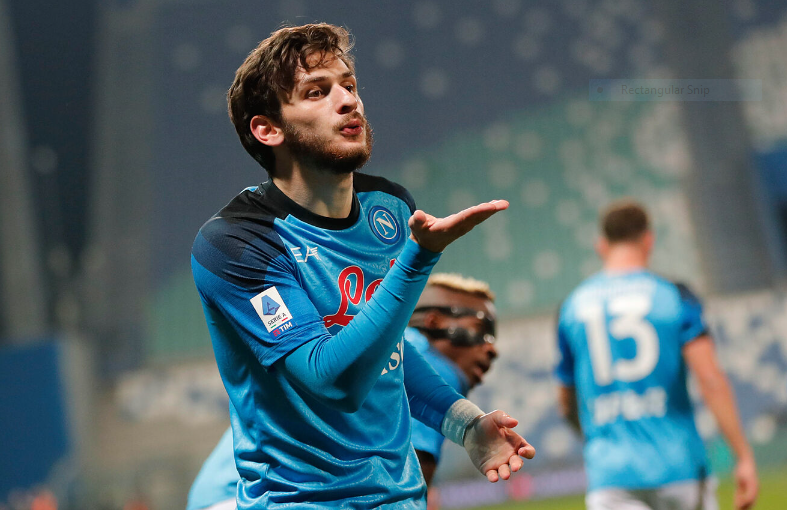
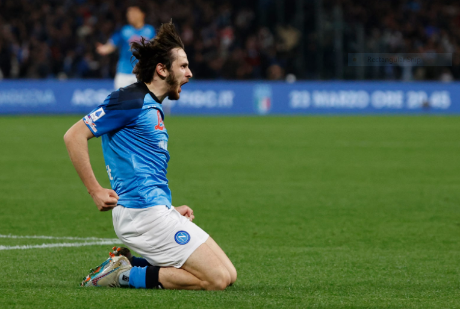
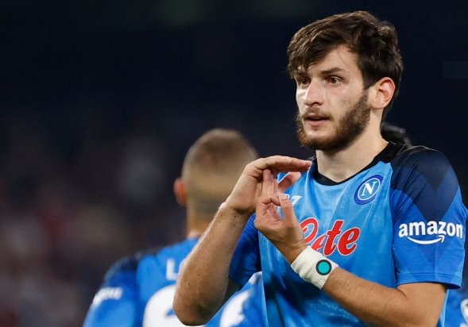
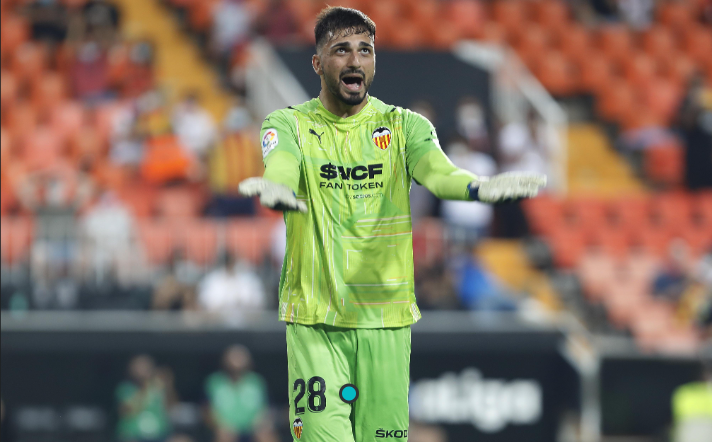
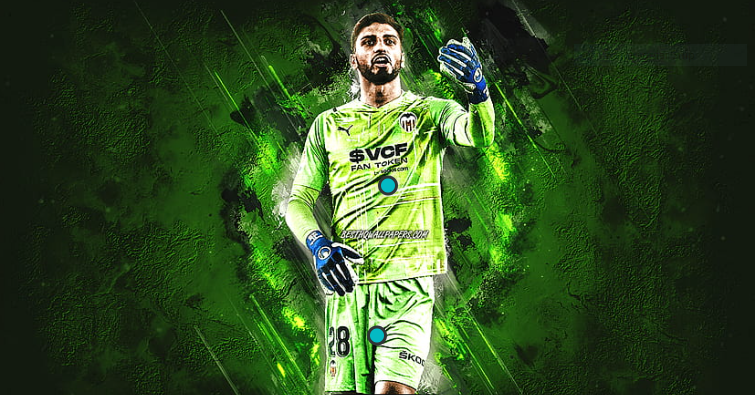

Georgia!
Khvicha Kvaratskhelia!!
Kvaratskhelia started his senior career playing for Dinamo Tbilisi at age 16, before departing to Rustavi
where he spent half a season. During his combined three-year tenure at Lokomotiv Moscow and Rubin Kazan,
Kvaratskhelia won two consecutive Russian Premier League Best Young Player awards. Following a short spell
at Dinamo Batumi,
Kvaratskhelia signed for Napoli in 2022, and in his debut season helped the club to reach the quarter-final
of the UEFA Champions League for the first time ever, and win a first Serie A title in 33 years, finishing
as the league's top assist provider. This saw him named Serie A Most Valuable Player and the Champions
League's Young Player of the Season.[5]
Widely regarded as one of the best Georgian players of all time, Kvaratskhelia established himself for
Georgia in all national youth teams, becoming a key player under different managers. He then became an
integral part of the senior team after making his debut in 2019, and helped Georgia qualify for UEFA Euro
2024, the country's first ever major international tournament.[6][7][8]



Giorgi Mamardashvili!!
Giorgi Mamardashvili (Georgian: გიორგი მამარდაშვილი, romanized: giorgi mamardashvili; born 29
September 2000) is a Georgian professional footballer who plays as a goalkeeper for La Liga club
Valencia and the Georgia national team.
Mamardashvili spent much of his youth years at Dinamo Tbilisi. After signing a professional contract
with this club, he was loaned to other Erovnuli Liga teams for three seasons before his transfer to Valencia. He has quickly established himself as a first-choice shot-stopper, becoming the first
ever Georgian goalkeeper in the Spanish top tier.

